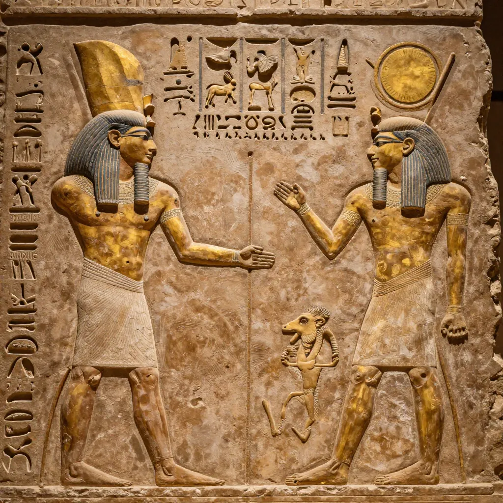
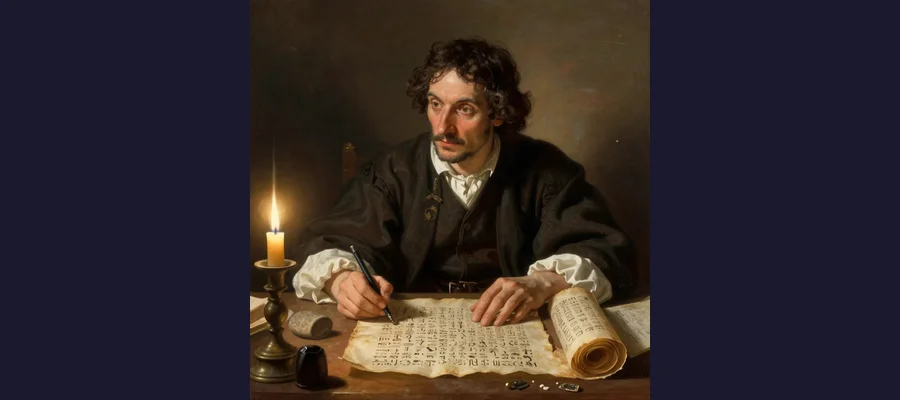

Rosetta Stone: How One Broken Slab Unlocked 3,000 Years of Lost Egyptian History

The Rosetta Stone, discovered in 1799 by French soldiers in Egypt, contains the same decree written in hieroglyphs, demotic, and ancient Greek — the key to deciphering 3,000 years of lost Egyptian history.
For nearly 1,400 years, the written language of ancient Egypt was utterly silent. The hieroglyphs that covered temple walls, filled tomb chambers, and adorned papyrus scrolls were visible but meaningless — beautiful symbols that no one on Earth could read. The last people who had understood them died in the fourth and fifth centuries CE, and with them died the key to three thousand years of recorded history. The pyramids, the pharaohs, the temples along the Nile — all of it was locked behind a wall of unintelligible birds, reeds, eyes, and seated figures.
Then, in the summer of 1799, a group of French soldiers digging the foundations of a fort near the Egyptian town of Rashid (known to Europeans as Rosetta) pulled a broken slab of dark stone from the rubble. On its surface were three distinct bands of writing: one in ancient Greek, one in a cursive Egyptian script now called demotic, and one in hieroglyphs. It would take another twenty-three years of painstaking, brilliant, often bitter scholarly labor before anyone could read the hieroglyphic section. But when the code was finally broken, it did not merely translate one text. It unlocked every Egyptian text — and with it, an entire lost civilization.
The Rosetta Stone became the most famous artifact in the world not because of what it said, but because of what it enabled. And the story of how two rival scholars — one English, one French — raced to crack its code is as dramatic as any tale from the ancient world itself.
A Fort, A Trench, A Broken Slab: The Discovery
In 1798, Napoleon Bonaparte invaded Egypt with an army of 36,000 soldiers and a corps of 167 scholars, scientists, and artists — the Commission des Sciences et des Arts. Napoleon wanted more than military conquest; he intended to study and document Egyptian civilization comprehensively. The scholars surveyed monuments, collected artifacts, and eventually produced the massive Description de l’Egypte, a multi-volume work that launched the modern field of Egyptology.
In July 1799, French soldiers under the command of Lieutenant Pierre-François Bouchard were reinforcing Fort Julien, a medieval-era fortification near the town of Rashid in the Nile Delta, about 40 kilometers from Alexandria. While digging trenches to strengthen the fort's foundations, Bouchard's men uncovered a stone measuring approximately 114 centimeters high by 72 centimeters wide (45 by 28 inches), made of granodiorite, a dark, hard igneous rock often misidentified as basalt. The stone was clearly broken — the top and bottom corners were missing — and it had three distinct bands of inscription.
Bouchard recognized the potential importance of the find and brought it to the attention of the expedition's scholars. The Greek section was quickly identified, and since educated Europeans could read ancient Greek, the text could be partially understood almost immediately. The realization that the same decree appeared to be written in three scripts — including the mysterious hieroglyphs — electrified the scholarly community. The stone was shipped to Cairo, where Napoleon's Institut d’Egypte made casts and prints of the inscriptions, distributing them to scholars across Europe.
- The stone measures 114.4 cm high × 72.3 cm wide × 27.9 cm thick (45 × 28.5 × 11 inches)
- It weighs approximately 760 kilograms (1,676 pounds)
- The inscription records the Memphis Decree of 196 BCE, issued by a council of Egyptian priests
- The three scripts are: Egyptian hieroglyphs (top, 14 lines surviving), demotic script (middle, 32 lines), and Ancient Greek (bottom, 54 lines)
- The hieroglyphic section is the most damaged — only 14 of an estimated 29 lines survive
- The stone is a fragment of a larger stele that originally stood in a temple
📜 The Boring Truth About the Content
For all its earth-shattering significance, the actual text of the Rosetta Stone is gloriously dull. It records a priestly decree issued at Memphis in 196 BCE, during the reign of the boy-king Ptolemy V Epiphanes. The decree praises the young pharaoh for his generosity to temples, his reduction of taxes, and his release of prisoners, and it instructs that the decree be inscribed in three scripts and displayed in temples throughout Egypt. It is essentially a press release — ancient bureaucratic propaganda. There is no ancient wisdom, no prophecy, no secret knowledge. The irony is that one of the least interesting texts ever written in ancient Egypt became the key to reading every interesting text the civilization ever produced.

Hieroglyphic cartouches on the Rosetta Stone — the oval rings containing royal names that were the key to deciphering the entire script.
The Code-Breakers: Young vs. Champollion
The race to decipher the Rosetta Stone became one of the most celebrated intellectual rivalries in history, pitting an English polymath against a French prodigy in a contest that would define their careers and their legacies.
Thomas Young: The Polymath's Partial Breakthrough
Thomas Young (1773–1829) was one of the most brilliant minds of his generation — a physician, physicist, and linguist whose contributions to science included the wave theory of light and the modulus of elasticity still used in engineering. Young began studying the Rosetta Stone in 1814, focusing first on the demotic script, which he identified as a cursive form of Egyptian writing related to, but distinct from, hieroglyphs.
Young's critical breakthrough came when he identified the cartouches — oval shapes enclosing groups of hieroglyphic symbols — as containing royal names. By matching the Greek text, which mentioned Ptolemy, with the cartouches in the hieroglyphic section, Young correctly deduced that hieroglyphs were not purely symbolic or ideographic but could represent sounds. In 1819, he published his findings in the Encyclopaedia Britannica, including a partial decipherment of the hieroglyphic alphabet. It was a landmark achievement — but Young stopped short of a complete decipherment, believing that hieroglyphs were primarily symbolic with some phonetic elements mixed in.
Jean-François Champollion: The Genius Who Finished the Job
Jean-François Champollion (1790–1832) had been obsessed with ancient Egypt since childhood. By the age of sixteen, he had presented a paper arguing that Coptic, the liturgical language of Egyptian Christians, was a late form of the ancient Egyptian language — an insight that would prove crucial. Champollion began working seriously on the Rosetta Stone in 1814, corresponding with Young but pursuing his own approach.
The decisive moment came in September 1822. Champollion had been studying not only the Rosetta Stone but also inscriptions from other Egyptian monuments brought to Europe. Examining copies of inscriptions from the temple at Abu Simbel, he identified the names of Ramesses and Thutmose in cartouches, using phonetic values he had derived from the Rosetta Stone's Greek and demotic sections. This proved that hieroglyphs could represent purely phonetic sounds, not just ideas — and that the phonetic system extended far beyond Greek names like Ptolemy to native Egyptian names as well.
According to legend, Champollion rushed into his brother's office at the Académie des Inscriptions et Belles-Lettres in Paris, shouted "Je tiens mon affaire!" ("I've got it!"), and collapsed unconscious. Whether or not the story is true, the impact was real. In 1822, Champollion published his Lettre à M. Dacier, announcing the decipherment. By 1824, his Précis du système hiéroglyphique laid out the complete system. The ancient Egyptians could finally speak again.
🌍 How the Stone Got to London
The Rosetta Stone was discovered by the French but has resided in London since 1802. When British forces defeated Napoleon's army in Egypt, the Treaty of Alexandria (1801) required the French to surrender all antiquities they had collected. The stone was transported to England aboard the captured French frigate Egyptienne and presented to the British Museum, where it has remained almost continuously for over 220 years. The French got copies. The British Museum acquired the stone for the price of a military campaign, and it has been the museum's most visited object ever since, drawing millions of visitors annually — far more than the Great Sphinx or the Pyramids of Giza will ever see in a gallery.

Jean-Francois Champollion, who finally cracked the hieroglyphic code in 1822 using his knowledge of Coptic and the cartouches on the Rosetta Stone.
Unlocking a Lost Civilization: What the Stone Made Possible
The decipherment of hieroglyphs did far more than translate one priestly decree. It opened the door to three thousand years of written records that had been completely inaccessible. Temple inscriptions that had been mute for over a millennium suddenly spoke of pharaonic conquests, religious rituals, and court intrigue. Tomb autobiographies revealed the lives of officials, soldiers, and priests. Papyrus scrolls that had been catalogued but never read yielded medical treatises, mathematical problems, love poems, and administrative records.
Before Champollion, scholars could only guess at the meaning of Egyptian monuments. The prevailing assumption, dating back to Greek and Roman authors, was that hieroglyphs were purely symbolic — each sign representing an idea or concept rather than a sound. This misconception persisted for centuries, enshrined in the work of the 17th-century Jesuit scholar Athanasius Kircher, who produced elaborate but entirely wrong translations of hieroglyphic texts. Champollion's proof that hieroglyphs were a mixed system — combining phonetic signs, determinatives (signs indicating meaning categories), and ideograms — transformed the study of ancient Egypt from speculation into science.
The impact was immediate and enormous. Within decades, scholars were reading temple walls, tomb inscriptions, and papyri across Egypt. The Book of the Dead, the ancient Egyptian funerary text found in countless tombs, was translated and published. Royal annals recorded the deeds of pharaohs. The historical framework of ancient Egypt — its dynasties, its wars, its religious evolution — began to take shape based on primary sources rather than conjecture. Every major discovery in Egyptology since the 1820s, from the excavation of royal tombs to the interpretation of temple reliefs, depends on Champollion's breakthrough.
- Before the decipherment, scholars believed hieroglyphs were purely symbolic/ideographic — each sign representing an idea
- Champollion proved hieroglyphs were a mixed system: phonetic signs, determinatives, and ideograms working together
- The decipherment enabled reading of all Egyptian texts: temple inscriptions, tomb autobiographies, papyri, and the Book of the Dead
- Knowledge of Coptic, the liturgical language of Egyptian Christians, was crucial — it preserved the late form of the ancient Egyptian language
- The Rosetta Stone is one of several copies of the Memphis Decree; other copies and related decrees have since been found in Egypt
🏰 Egypt Wants It Back
The Rosetta Stone has become the focus of one of the most prominent cultural repatriation debates in the world. Egypt has repeatedly requested the stone's return, with the campaign led most visibly by Zahi Hawass, the former head of Egypt's Supreme Council of Antiquities. Hawass has argued that the stone was taken illegally and belongs in Egypt, near the sites it describes. The British Museum has consistently declined, citing the stone's legal acquisition through the Treaty of Alexandria and its global accessibility in London. The debate mirrors similar controversies surrounding the Parthenon Marbles (Elgin Marbles) and other artifacts acquired during the colonial era. In 2023, Hawass launched a petition campaign calling for the stone's return, arguing that Egypt has the museums and expertise to care for it properly. The stone remains in London — for now.
🗺 The Key That Opened a Thousand Doors
The Rosetta Stone is not important for what it is — a broken slab with a boring decree. It is important for what it did. Without it, the temples at Giza, the tombs in the Valley of the Kings, and the papyri buried in desert caves would remain as mysterious as the Voynich Manuscript or the undeciphered scripts of the ancient world. Champollion did not merely translate a text; he gave a voice back to a civilization that had been silent for fourteen centuries. The Rosetta Stone proved that even the most impenetrable codes can be broken, that human ingenuity can bridge gaps of thousands of years, and that sometimes the most consequential discoveries come not from the content of a message but from the key that lets us read it. Today, the name "Rosetta Stone" has become a universal metaphor for any key to understanding — from language-learning software to space probes. The stone itself, cracked and incomplete, sits in the British Museum, still drawing crowds, still silently insisting that even the deepest silences can be broken.
Frequently Asked Questions
What does the Rosetta Stone actually say?
The Rosetta Stone records the Memphis Decree of 196 BCE, a pronouncement by a council of Egyptian priests affirming the royal cult of the young pharaoh Ptolemy V Epiphanes. The decree praises Ptolemy for his benefactions to temples, his reduction of taxes, and his release of prisoners, and it orders that the decree be inscribed in three scripts — hieroglyphs, demotic, and Greek — and displayed in temples throughout Egypt. The content is essentially bureaucratic: a thank-you note from priests to a king. Its significance lies not in what it says but in the fact that it says the same thing in three scripts, enabling scholars to use the readable Greek to decode the unreadable hieroglyphs.
Who deciphered the Rosetta Stone?
The decipherment was a collaborative process spanning two decades, but two figures stand out. Thomas Young, an English polymath, made the first critical breakthroughs between 1814 and 1819, identifying cartouches as royal names and demonstrating that hieroglyphs could have phonetic values. Jean-François Champollion, a French Egyptologist, built on and went beyond Young's work to achieve the full decipherment in 1822, proving that hieroglyphs represented a mixed system of phonetic, ideographic, and determinative signs. The rivalry between Young and Champollion was intense, with each man claiming priority, but modern scholarship recognizes both contributions as essential to the decipherment.
Is the Rosetta Stone the only one of its kind?
No. The Memphis Decree of 196 BCE was inscribed on multiple stelae and displayed in temples throughout Egypt. Several other copies and related decrees have since been discovered, including the Decree of Canopus (238 BCE) and the Memphis Decree of Raphia (217 BCE). However, the Rosetta Stone remains the most complete and famous example, and it was the first such trilingual inscription discovered, making it the crucial tool for decipherment.
Why is the Rosetta Stone in the British Museum and not in Egypt?
The Rosetta Stone was transferred to British possession in 1801 under the terms of the Treaty of Alexandria, which ended Napoleon's campaign in Egypt and required the French to surrender all collected antiquities to the British. The stone was shipped to England in 1802 and presented to the British Museum, where it has remained ever since. Egypt has repeatedly requested its return, most prominently through former antiquities chief Zahi Hawass, who argues the stone was taken during a colonial occupation and should be repatriated. The British Museum maintains that the stone was legally acquired and is most accessible to a global audience in London.
📖 Recommended Reading
Want to learn more? Check out The Rosetta Stone: The Decipherment of the Heiroglyphs on Amazon for a deeper dive into this fascinating topic. (As an Amazon Associate, we earn from qualifying purchases.)
References & Further Reading
- Wikipedia: Rosetta Stone — Discovery, description, decipherment, and cultural impact
- Wikipedia: Decipherment of Ancient Egyptian Scripts — Young, Champollion, and the race to read hieroglyphs
- Britannica: Rosetta Stone — Overview of the stone, its texts, and the decipherment
- British Museum Collection: Rosetta Stone — Official museum catalog entry for the artifact
- World Archaeology: Rosetta Stone — Discovery context and decipherment timeline
- The Past: Deciphering the Decipherers — Young vs. Champollion rivalry analysis
- Wikipedia: Jean-François Champollion — Biography of the decipherment's principal architect
Editorial note: reconstructions are continuously revised as imaging and inscription studies improve. See our Editorial Policy.